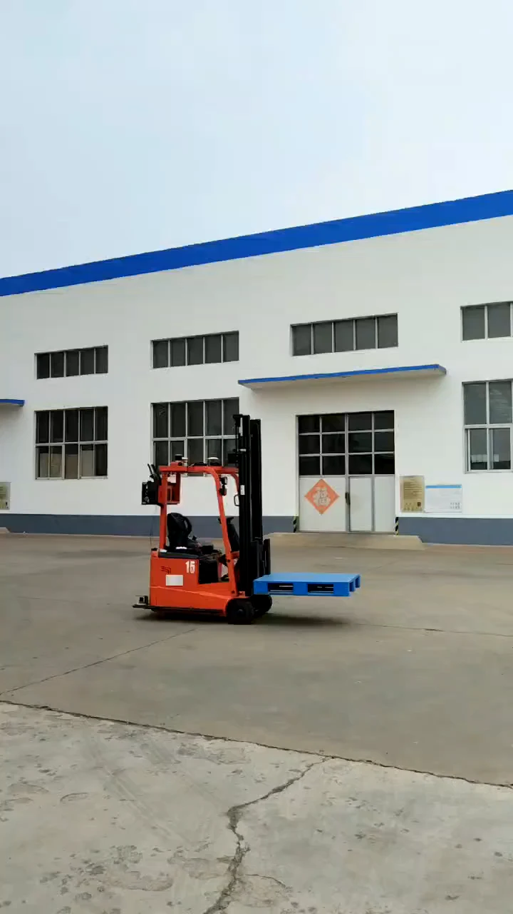

型号待确认
无人叉车研究样机

实验室介绍PPT研究图片
PPT中展示的物流机器人研究样机，可用于说明无人搬运与物流作业研究场景；具体型号及归属待确认。
| 设备型号 | 待确认 |
|---|---|
| 数量与归属 | 待确认 |
| 负责人 | 待补充 |
研究与实验用途
- 物流机器人系统研究场景展示
配套资料
资料依据：实验室介绍PPT，第15页；国汽目录未发现叉车资料。

实验室介绍PPT研究图片
PPT中展示的物流机器人研究样机，可用于说明无人搬运与物流作业研究场景；具体型号及归属待确认。
| 设备型号 | 待确认 |
|---|---|
| 数量与归属 | 待确认 |
| 负责人 | 待补充 |
资料依据：实验室介绍PPT，第15页；国汽目录未发现叉车资料。